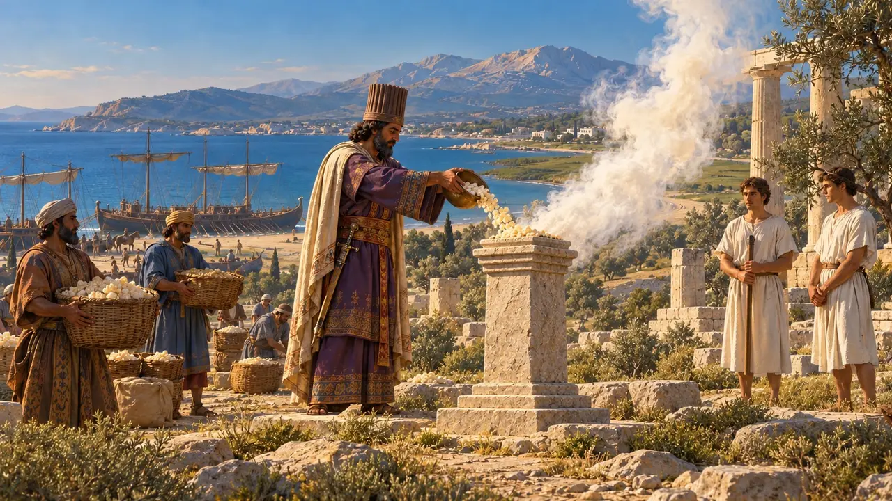
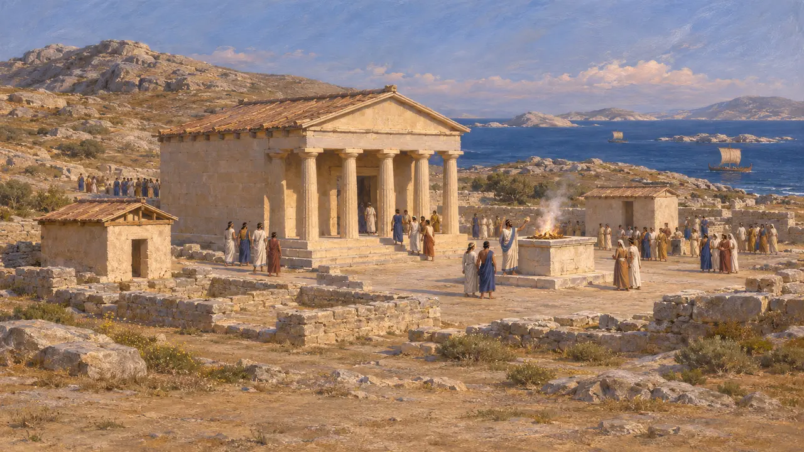
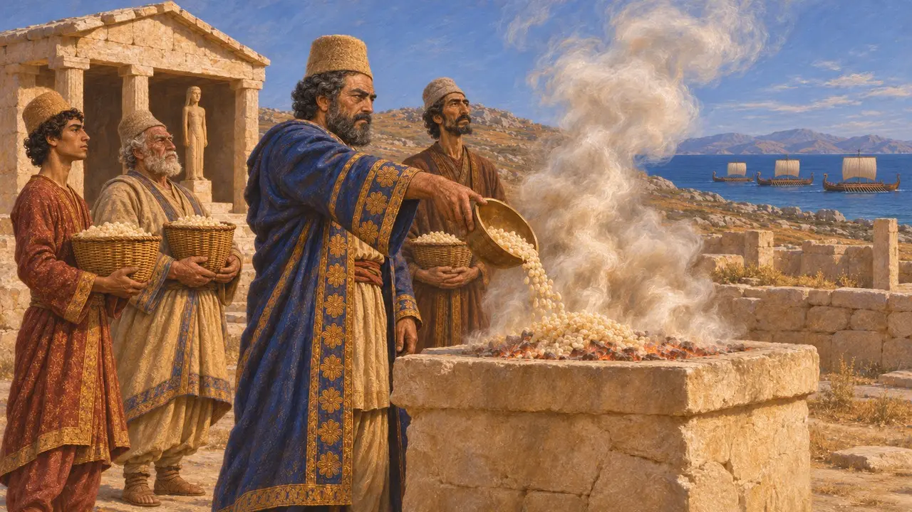
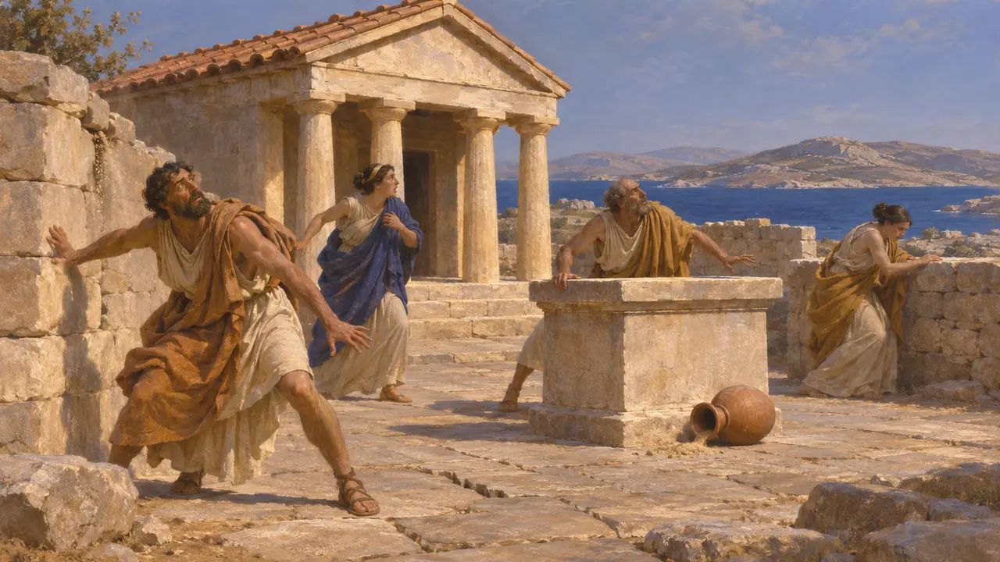
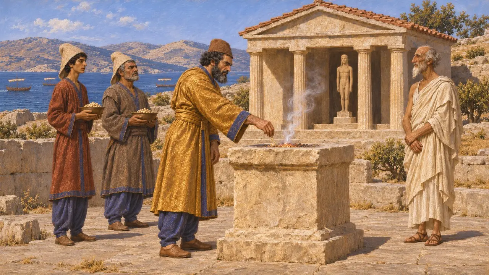
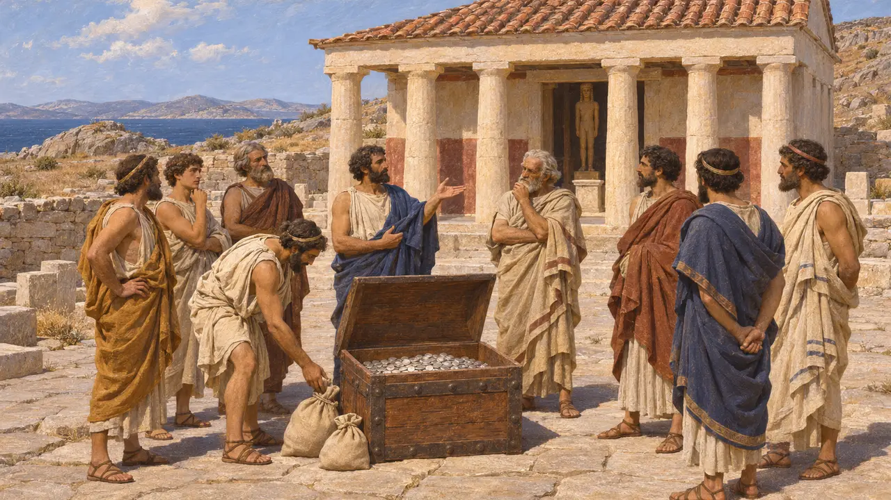

Delos
Apollon ve Artemis'e adanmış Ege adası; MÖ 490'da Pers donanması tarafından dokunulmadan bırakıldı
Oyunda: Bölüm 8: Marathon Koyu
Delos, Kikladlar'ın ortasında yer alan, Apollon ile Artemis'in doğum yeri sayılan küçük bir adaydı. Herodotos, Datis ile Artaphernes'in donanmasının MÖ 490'da adanın yanından geçtiğini ve ona zarar vermediğini söyler. Hikâyeyi bir Yunan yazar anlatır; Pers tarafı bu ziyaretle ilgili hiçbir anlatı bırakmamıştır.
Oyunda: Delos, Kronik'te ve Datis ile Artaphernes'in seferine dair olay makalesinde, Datis'in dokunmadığı Apollon adası olarak anılır. Kendine ait bir oyun mekaniği yoktur.

Kykladlar'da bir kutsal alan
BelgelerdeFransız Atina Okulu'nun Delos'ta yürüttüğü kazılar, Apollon'un kutsal alanını ve daha eski kült yapılarının kalıntılarını ortaya çıkarmıştır. Ada, İonlar ve adalılar için önemli bir şenlik merkeziydi. Günümüze ulaşan anıtların çoğu büyük olasılıkla MÖ 490'dan sonraya aittir; bu yüzden alan, o yılın olaylarını değil, kültün önemini gösterir.
Excavation reports of the French School at Athens on Delos

Datis ve Delosluları
Antik anlatıHerodotos, Pers donanması yaklaşınca Delosluların Tenos'a kaçtığını söyler. Datis bir haberci göndererek neden kaçtıklarını sordu ve adanın iki tanrının doğum yeri olduğunu, ayrıca Kral'ın da adanın esirgenmesini emrettiğini belirterek adaya zarar vermeyeceğini bildirdi. Herodotos, Datis'in ardından sunakta büyük miktarda akgünlük yaktığını ekler.
Herodotus 6.97

Deprem
TartışmalıHerodotos'a göre Delos, kısa süre sonra bir depremle sarsıldı; bu, onun bildiği ilk ve son depremdi ve gelecek belaların habercisiydi. Thukydides, Peloponnesos Savaşı'ndan kısa süre önce Delos'ta bir sarsıntı olduğunu anar; bu, Herodotos'un sonradan hiç deprem olmadığı yönündeki iddiasıyla pek bağdaşmaz. Bu alamet, olaydan sonra yapılmış bir Yunan yorumudur.
Herodotus 6.98; Thucydides 2.8

Perslerin Yunan tanrılarına yönelik politikası
TartışmalıPerslerin Apollon'a duyduğu saygı, Kral'ın görevlilerinin Mısır ve Babil tapınaklarında olduğu gibi yerel kültlere saygı göstermesine dair daha geniş bir örüntüye uyabilir. Datis'in ne ölçüde bir politikayla hareket ettiği, Herodotos'un ise sahneyi ne ölçüde biçimlendirdiği belirsizdir. Pers tarafı bu ziyarete dair hiçbir anlatı bırakmamıştır.
P. Briant, From Cyrus to Alexander, 2002

Savaştan sonra Delos
Antik anlatıMÖ 478 ve MÖ 477'de Yunan müttefikler Atina önderliğinde bir birlik kurdu. Thukydides, ortak fonun Delos'ta tutulduğunu ve müttefiklerin kutsal alanda toplandığını söyler. Hazine daha sonra Atina'ya taşındı; modern araştırmacılar bu adımı genellikle yaklaşık MÖ 454 yılına tarihler. Plutarkhos bu taşınmayı Perikles ile ilişkilendirir.
Thucydides 1.96; Plutarch, Pericles
Kaynaklar
- Herodotus 6.97-98
- Thucydides 1.96
- P. Briant, From Cyrus to Alexander, 2002
- Plutarch, Pericles
- Excavation reports of the French School at Athens on Delos